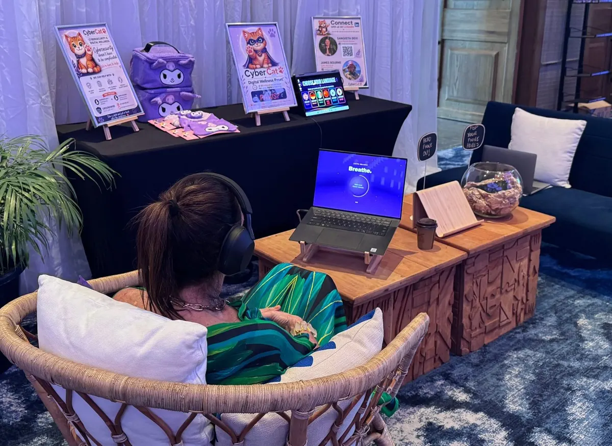
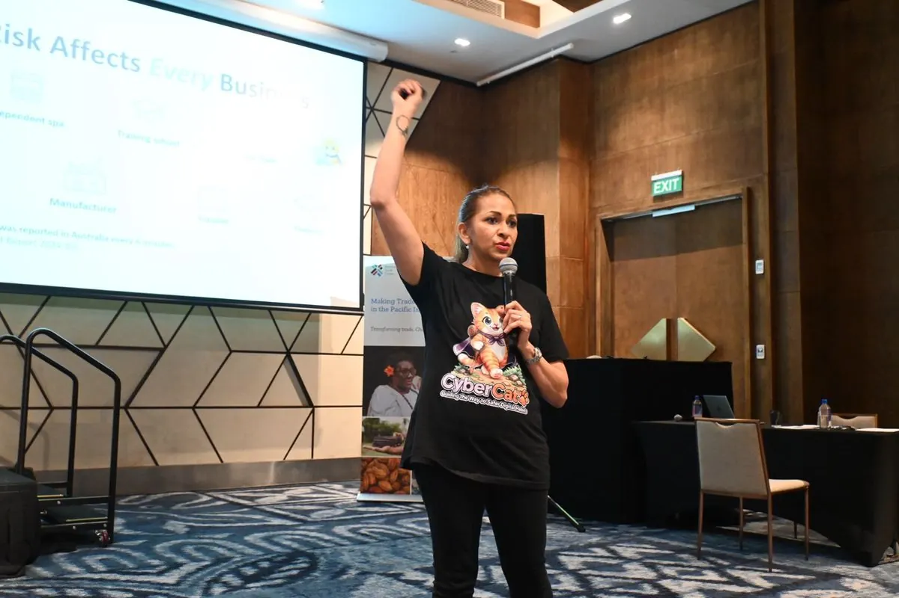

Cybersecurity is usually explained through technology.
At the CIDESCO Fiji Congress 2026 in Nadi, we wanted to do something different. We launched CyberCat with one simple focus: protecting the human in a digital world.
The idea behind CyberCat is straightforward. Secure technology still eventually meets a human decision.
Do I click this? Do I trust this message? Do I send the money? Do I share the code? Do I stop and verify first?
CIDESCO International and Debra Sadranu of Nama Fiji gave us the chance to take that conversation outside the traditional cybersecurity space and into beauty, wellness, education and business.
Digital safety is not just a technology issue
Businesses hold customer information, payment details, intellectual property and access to online systems. Individuals are dealing with scams, fake invoices, account takeovers, impersonation and increasingly convincing social engineering.
Most people do not want a technical lecture. They want to understand what is happening, what to look out for and what to do next.
That is where CyberCat comes in. We use simple, practical language and behaviour people can remember.
PAWS: the method. The pause: the behaviour.
PAWS: Pause. Assess. Walk away. Separately verify.
PAWS is the method. The pause is the behaviour.
What the 90-second Digital Wellness Reset showed us

One of the parts of CIDESCO that surprised us most was the response to the 90-second CyberCat Digital Wellness Reset.
Participants put their phones down, put on headphones and spent 90 seconds stepping away from the constant noise of the digital world. It was simple, but the response was strong. People described feeling calmer and more focused afterwards.
It confirmed something we had already been thinking about. Digital safety is not only about recognising threats. It is also about what state of mind someone is in when they have to make a decision.
If you are rushed, distracted, tired or under pressure, it is harder to think clearly. Sometimes the safest thing you can do is stop.
Cyber incidents do not stay inside a device
- A fake invoice can affect cash flow.
- A compromised account can affect customers.
- A scam can leave someone dealing with stress, embarrassment and uncertainty long after the initial incident.
That is why we also talk about what happens after something goes wrong. Who do you call? What do you secure first? What evidence do you keep? When do you contact your bank, employer or support service?
Our biggest takeaway from Fiji
People do not need to become cybersecurity experts. They need digital safety explained in a way that makes sense in everyday life. They need practical ways to recognise pressure. They need simple actions they can remember. And sometimes they just need permission to stop before reacting.
We have spent decades making technology safer. CyberCat focuses on making human decisions safer.
The power is in the pause.
At the congress
Our education session, “Protecting Your Business: IP, Client Data & Digital Safety in Beauty & Wellness”, covered protecting client information, recognising suspicious payment requests, safeguarding intellectual property and the scams that affect everyday spa operations.
Delegates took the 90-second Reset in our Wellness Corner between congress sessions. For spas, the same idea becomes the Arrival Ritual: 90 seconds for guests to settle in before their treatment.

Media coverage
- O Nadi Ko: CyberCat launches human-centred digital safety initiative at CIDESCO Fiji Congress
- The Fiji Times: Human factor key to fighting cyber crime
Bring the Digital Wellness Reset to your event
A 90-second digital detox for delegates, staff and guests, anywhere in the world.